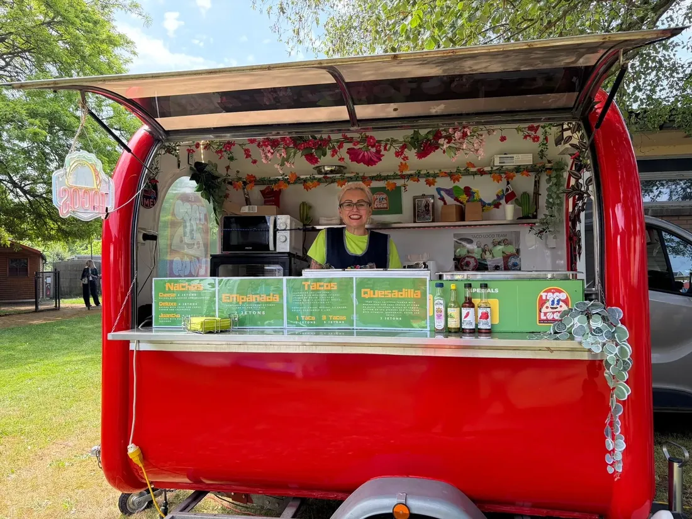
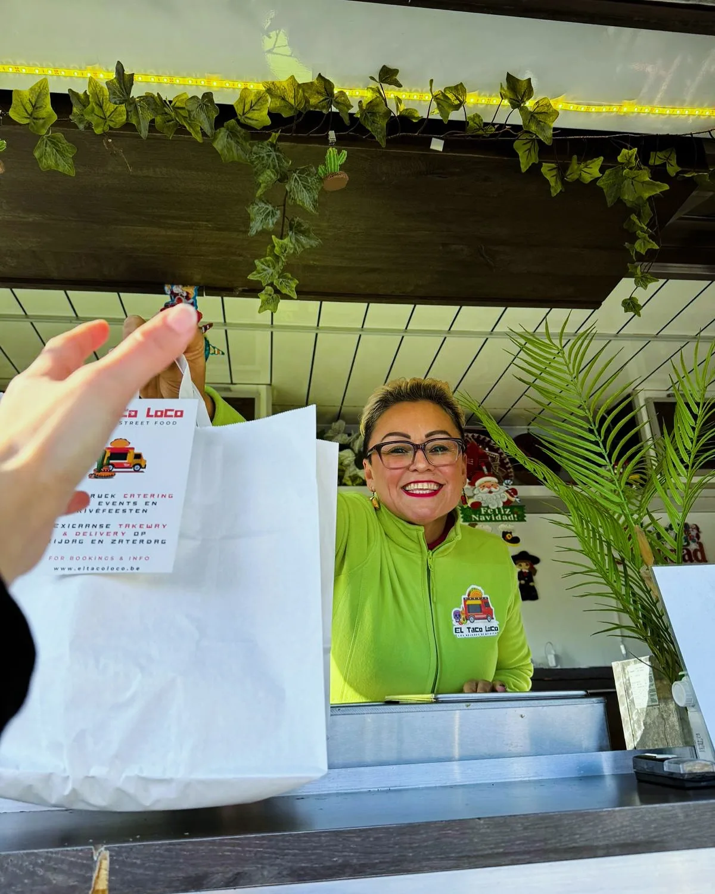
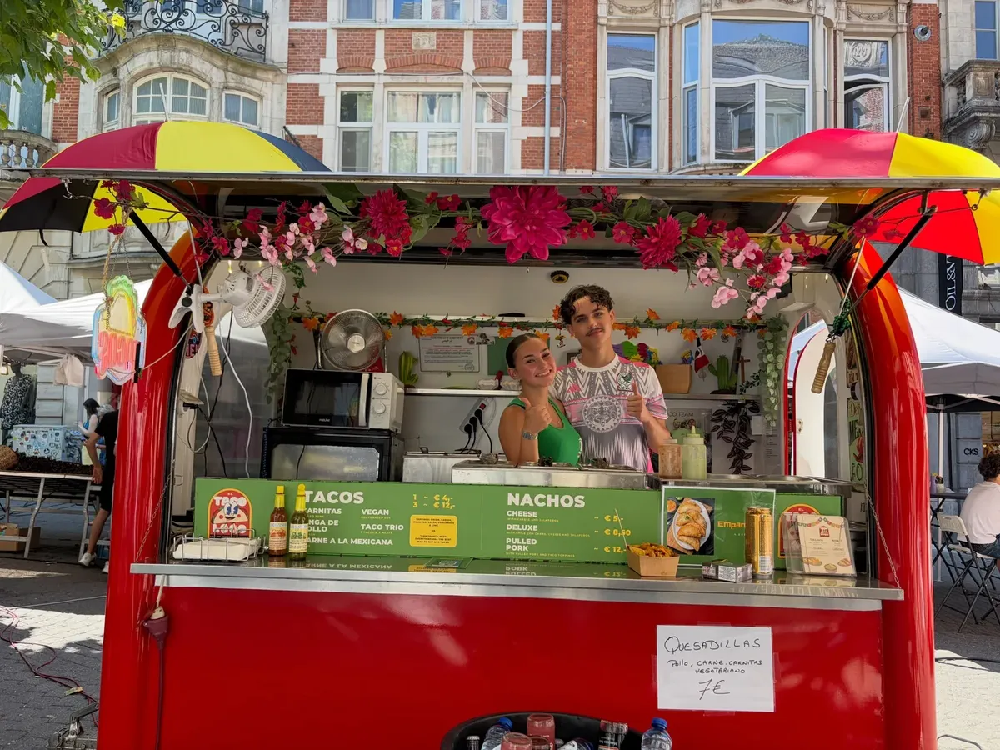
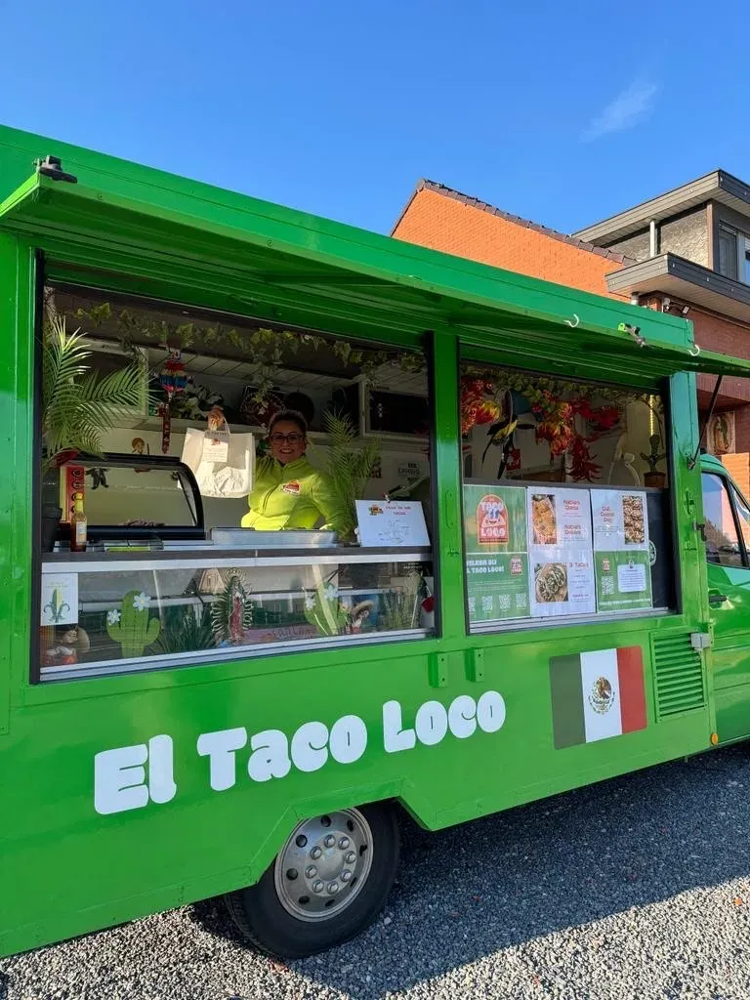
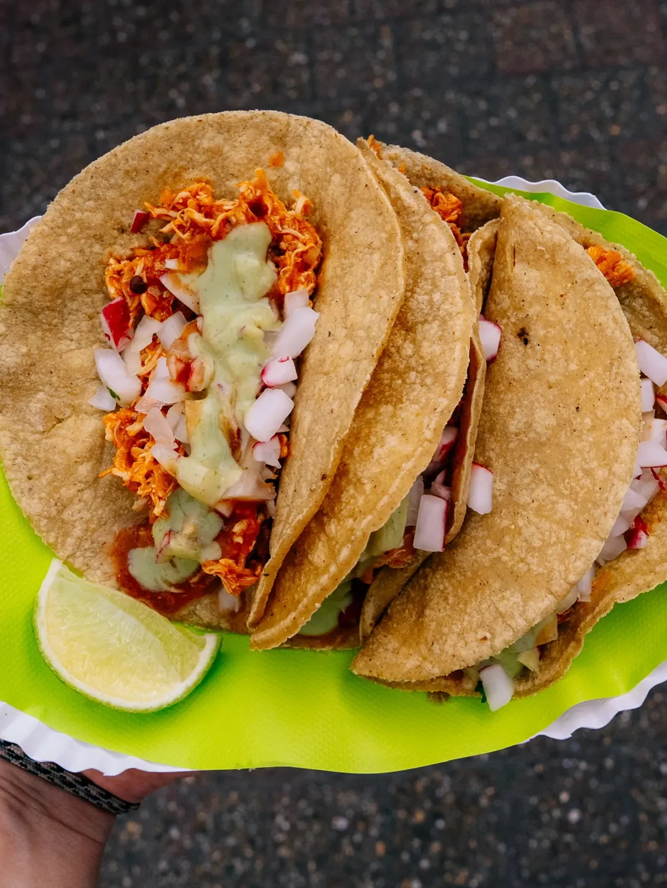
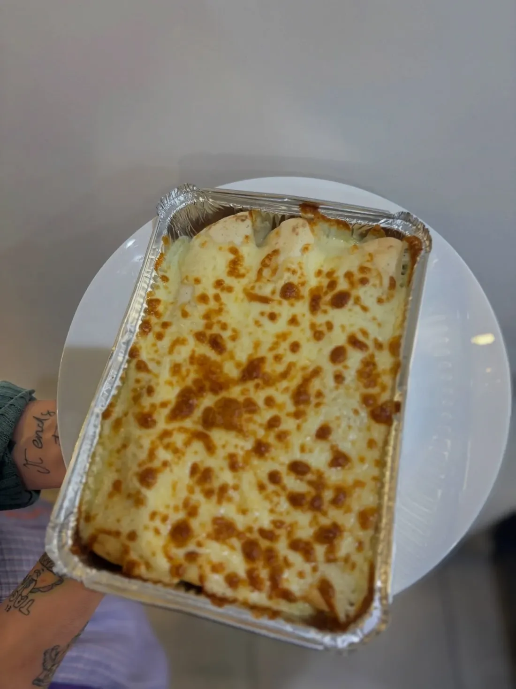
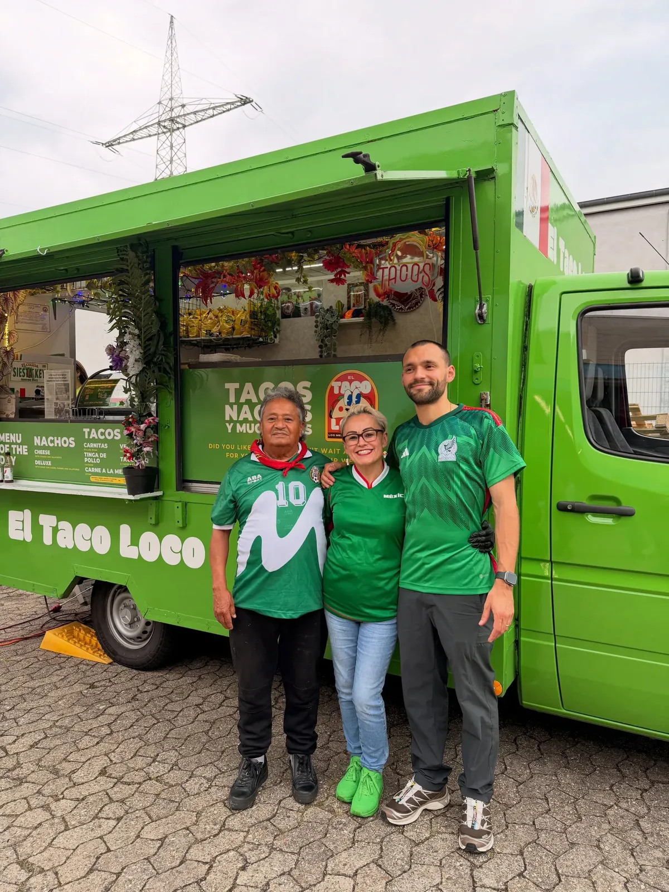
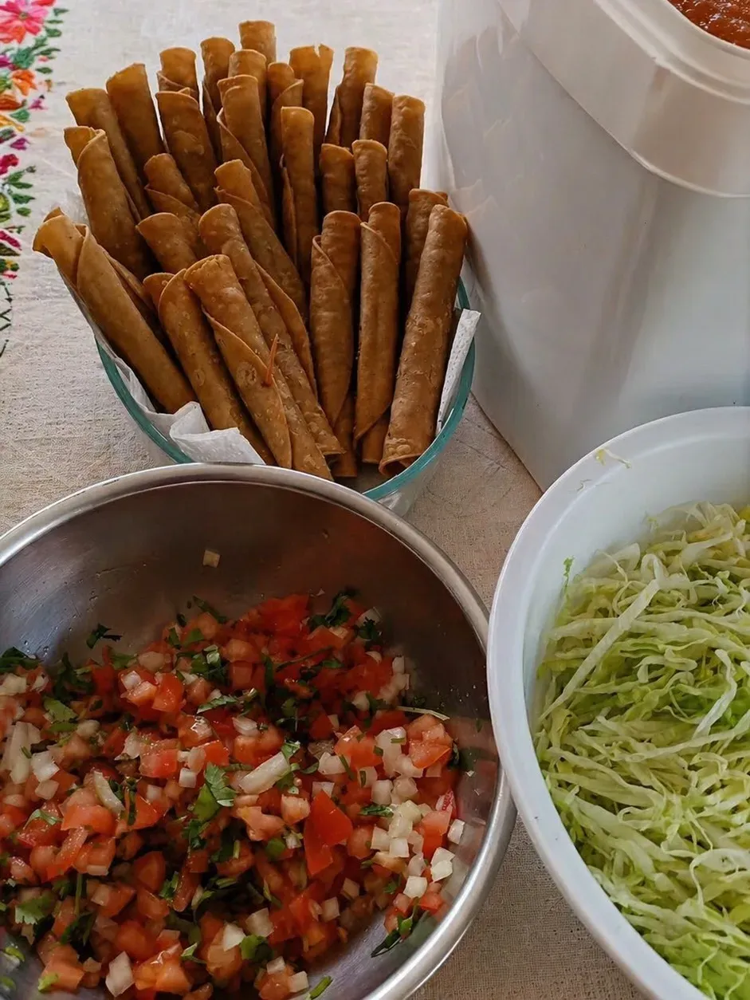
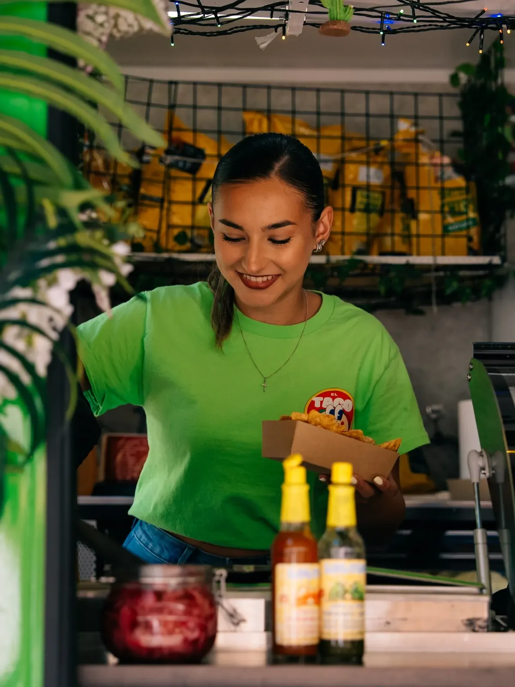
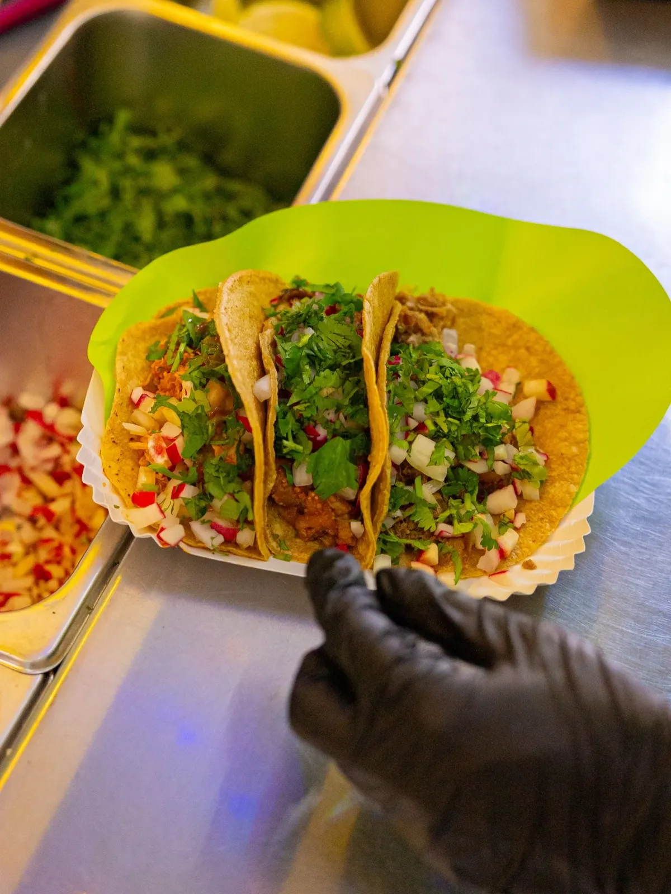

TakeawayAfhalen in Aarschot
Bestel online en haal je eten warm op aan de Nieuwrodese Steenweg. Op zondag koken we enkel op voorafbestelling.
Vrijdag en zaterdag, 17u tot 20uZondag op voorafbestelling

Lili is geboren en getogen in Guadalajara. Na dertig jaar in België kookt ze hier de gerechten van thuis: taco's, flautas, enchiladas en burrito's, huisgemaakt en met heel veel liefde.
Haal je eten op bij ons thuis in Aarschot, kom langs op de zaterdagmarkt in Leuven of laat de foodtruck naar jouw feest rijden.

TakeawayBestel online en haal je eten warm op aan de Nieuwrodese Steenweg. Op zondag koken we enkel op voorafbestelling.

MarktOp zaterdag staan we met taco's en nacho's op de markt. Empanadas of tamales? Bestel ze vooraf, dan liggen ze voor je klaar.

EventsVan communiefeest tot bedrijfsevent: we rijden met de foodtruck door heel de Benelux en zelfs tot in Duitsland.
Authentieke Mexicaanse smaken, vers bereid. Elk weekend zet Lili een ander hoofdgerecht in de kijker, naast de klassiekers die altijd op de kaart staan.

Zachte tortilla's, goed gevuld, met verse koriander, ui en salsa.
Opgerolde, krokant gebakken tortilla's met tinga de pollo.
Gevulde tortilla's, overgoten met saus en kaas uit de oven.

Rijkelijk gevuld, met een goudbruin laagje gesmolten kaas.


Met de foodtruck van El Taco Loco maakte Lili haar grote droom waar: het eten van thuis laten proeven aan zoveel mogelijk mensen. Toen tijdens corona alle evenementen wegvielen, begon ze te koken voor afhaal bij haar thuis. Vandaag komen veel klanten week na week terug.
Haar zoon Juan José is haar rechterhand, en wie hier werkt, hoort bij de familie.
El Taco Loco is voor mij veel meer dan een zelfstandige zaak. De mensen die hier werken zijn familie.Lili, zaakvoerder

Een communie, een verjaardag, een personeelsfeest of een festival: wij brengen de foodtruck en de Mexicaanse keuken tot bij jou.
Ze voorzagen ons van super lekker eten en namen het gehele catering stuk uit onze handen. Alles werd voorzien, ook de bordjes. Het was fantastisch. De gasten waren ook vol lof over de lekkere gerechten.
El Taco Loco is bij ons geweest om 150 hongerige monden te voeden en het was helemaal top! Leuke crew, lekker eten en snel. Bedankt!
Superfijne samenwerking van begin tot einde! We kozen El Taco Loco voor ons bedrijfsfeest en waren daar heel tevreden van. De communicatie vooraf verliep heel vlot en professioneel.
Bestellen, een vraag over de kaart of je feest plannen? Stuur gerust een berichtje of bel even.

Ik maakte deze demo voor jullie om te tonen wat er kan. Na een kort gesprek maak ik er iets veel persoonlijkers van, helemaal naar jullie wens.
Vrijblijvend. Ik kom langs of we bellen.
Op maat, op jullie eigen domein.
Geen voorschot. Jullie betalen pas als alles klaar is.
Hosting, domeinnaam en kleine wijzigingen, zoals nieuwe openingsuren.
Omdat een voorbeeld meer zegt dan een mail. Zo zien jullie meteen wat er kan, en het kost jullie niets.
Nee. Het gesprek is vrijblijvend. Vinden jullie het niks, dan is het daarmee gedaan.
Na ons gesprek staat jullie site binnen 10 tot 14 dagen online.
Zeker. Jullie domeinnaam kan gewoon blijven, de nieuwe site komt in de plaats van de oude.
Nee, dat doe ik op basis van ons gesprek. Eigen foto's zijn mooi meegenomen, maar niet nodig om te starten.